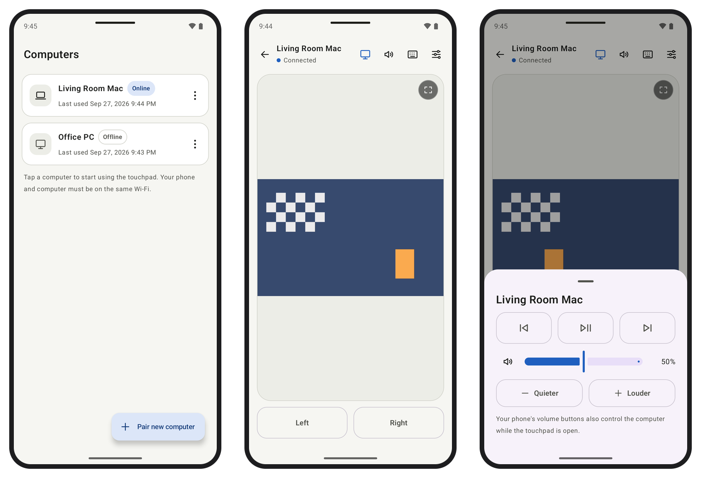

📺
Layar komputer di HP
Lihat layar komputer di belakang touchpad, jadi kamu tahu persis apa yang kamu klik. Cubit untuk zoom (tampilan mengikuti kursor), atau pakai layar penuh.
Gratis · Open source · macOS & Windows
Sudah nyaman di sofa, video diputar di TV, lalu iklan muncul. Tombol Skip Ad ada di seberang ruangan. Armrest menjadikan HP-mu touchpad, keyboard, dan remote untuk Mac atau PC Windows, jadi kamu tidak perlu bangun.

Aplikasi remote desktop dibuat untuk komputer yang jauh. Armrest dibuat untuk komputer yang ada di situ, hanya saja tidak terjangkau tangan.
Lihat layar komputer di belakang touchpad, jadi kamu tahu persis apa yang kamu klik. Cubit untuk zoom (tampilan mengikuti kursor), atau pakai layar penuh.
Tap untuk klik, scroll dan klik kanan dengan dua jari, tap lalu geser untuk drag. Rasanya seperti trackpad Mac.
Ketik dengan keyboard HP, termasuk emoji dan koreksi otomatis. Ada Esc, Tab, panah, dan shortcut seperti ⌘C atau Ctrl+C.
Keyboard muncul sendiri saat kamu mengklik kolom teks di komputer, dan tertutup saat kamu keluar darinya.
Putar/jeda, berikutnya, dan sebelumnya untuk YouTube, Netflix, Spotify, dan apa pun yang merespons tombol media.
Tombol volume di HP langsung mengatur volume komputer selama touchpad terbuka.
Tidurkan, mulai ulang, atau matikan komputer, lalu nyalakan lagi lewat Wake-on-LAN.
Scan QR, izinkan di komputer, selesai. Tersambung ulang otomatis.
macOS 13+ dan Windows 10/11 (x64 dan ARM64). Satu HP bisa untuk beberapa komputer.
Unduh .dmg untuk macOS atau installer untuk Windows. Armrest berjalan diam-diam di menu bar atau tray.
Unduh .apk dan install di Android 8 atau lebih baru.
Klik Tambah perangkat… di komputer, scan QR dari HP, lalu klik Izinkan. Selesai.
Semuanya berjalan di WiFi rumahmu. Tidak ada akun, tidak ada server, tidak ada data yang keluar dari jaringanmu.
Armrest terus berkembang. Ini beberapa yang ada di rencana:
Mau dikabari saat ada rilis baru? Buka repo di GitHub, klik Watch → Custom → Releases.
Ya. Armrest gratis dan open source dengan lisensi MIT.
Belum. Saat ini app tersedia untuk Android 8 ke atas. App iPhone ada di rencana.
Tidak. HP dan komputer cukup berada di WiFi yang sama. Kalau app tidak menemukan komputer (misalnya di WiFi kantor atau hotspot), sambungkan lewat IP yang tertera di panel Armrest di komputer.
Build Armrest belum ditandatangani Apple dan Microsoft. Di macOS, klik kanan app lalu Open (atau Open Anyway di Privacy & Security pada macOS 15+). Di Windows, pilih More info → Run anyway. Kode sumbernya terbuka, jadi kamu juga bisa build sendiri.
Accessibility untuk menggerakkan kursor dan mengetik. Screen Recording hanya diperlukan kalau kamu ingin melihat layar komputer di HP.
Video yang dilindungi DRM (seperti Netflix) dan jendela yang memblokir tangkapan layar memang tidak bisa ditampilkan. Kontrol media tetap berfungsi.